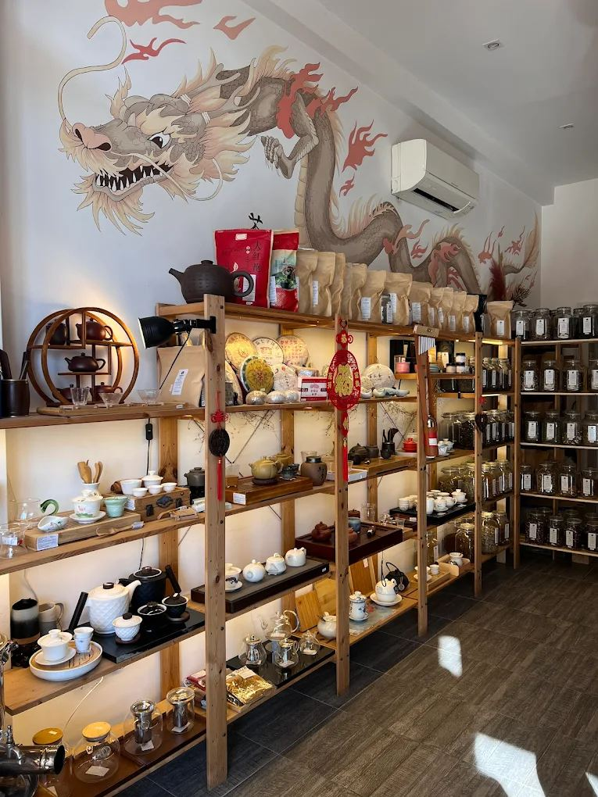
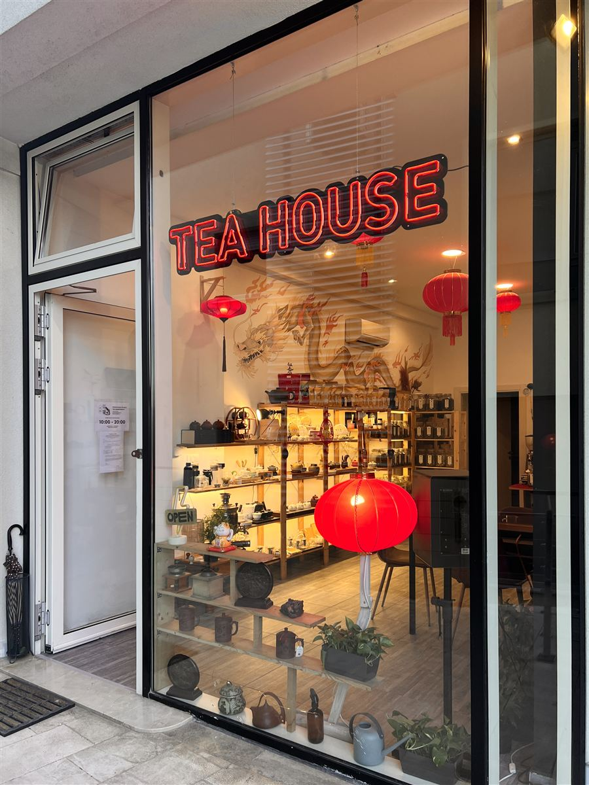

Budva · Crna Gora
Kuća čaja u centru Budve: rinfuzni čaj, pu-erh i ulun, pribor za čaj i čajne ceremonije
Svaki dan 10:00–20:00

O nama
Tea House je ugodna prodavnica čaja u Mediteranskoj ulici. Na policama su desetine vrsta rinfuznog čaja: od klasičnih crnih i zelenih do odležalih pu-erha, uluna i biljnih mješavina.
Naši savjetnici pomoći će vam da izaberete čaj po svom ukusu, daće vam da ga pomirišete i objasniće kako da ga pripremite. Imamo i kafu u zrnu, matchu i sve za pripremu čaja — od gaivana do glinenih čajnika.
Kontakt